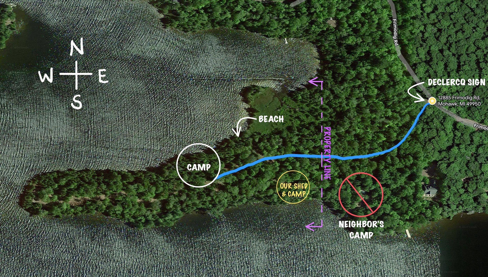

Medora Point
Lakeside Roost
Getting There
- Navigate to the driveway entrance.
- On the lefthand side of the road there is a sign on a tree that says “Declercq” — turn left into that driveway.
- You will pass our neighbor's camp on the left. Smile and wave, but keep-er-movin. There will be red and white streamers tied to the trees once you get to the property line.
- Keep following the red and white streamers until you get to the campsite.
NOTE: Download the entire map area for offline use before you get here. Verizon is the only carrier that works at Lake Medora — once you are NE of the Lake, there is no cell service at all.
Property Map

Download map
Recommendations close to Lake Medora
This is a short list of our favorites, but there is a lot more out there. Get out and explore, or don’t, whatever!
Grocery
Free Drinking Water
Breakfast
- Mornin’ Sunshine
Copper Harbor | Food truck, some of the best breakfast in the Keweenaw.
- Cafe Rosetta
Calumet | This one is a little far from the campsite, but a good spot to stop on your way out of town. A close tie for our favorite breakfast in the Keweenaw.
Lunch or Dinner
- Mount Bohemia
We go here weekly. Has a Nordic Spa (Saunas, steam room, hot tub, cold plunge, and showers) Also has good Pizza and serves beer.
- Eagle Harbor Inn
Eagle Harbor | We love this place, check out the lighthouse while you’re there.
- Lake Effect Bar and Grill
Typical bar food, nothing too fancy. Live music sometimes!
Dinner
- Fitzgerald’s
Eagle River | Simply the best food in the Keweenaw. They also do Sunday brunch! Reservation required. Casual attire.